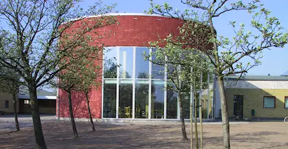
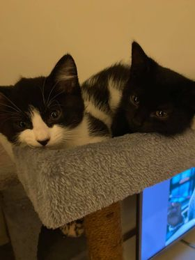
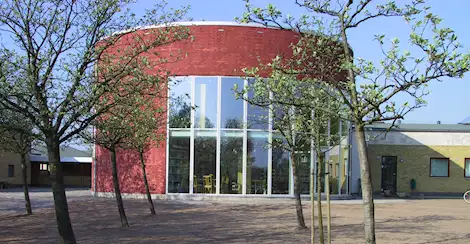
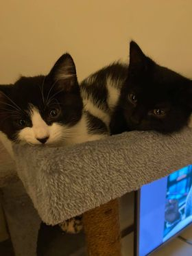
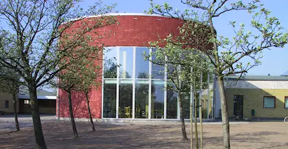
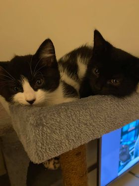

Av Gabriel Holmkvist
Jag är 21 år, bor i Ekeby med min familj och mina katter. Är väldigt ny inom programmering men har alltid fascinerats av det. Jag ser fram emot att fortsätta med denna kursen och fördjupa mig inom frontend. Nedanför har jag bilder på mig, vårt bibliotek i Ekeby och mina två katter; Armani & Gucci.


Klicka på knappen nedanför för att komma till en av mina favoritsidor